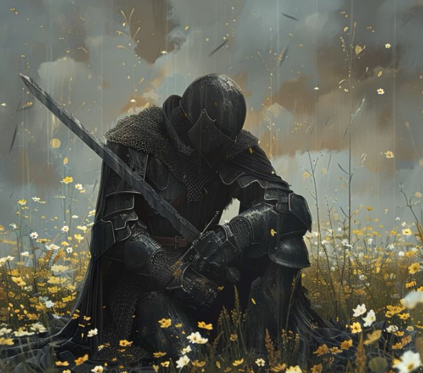
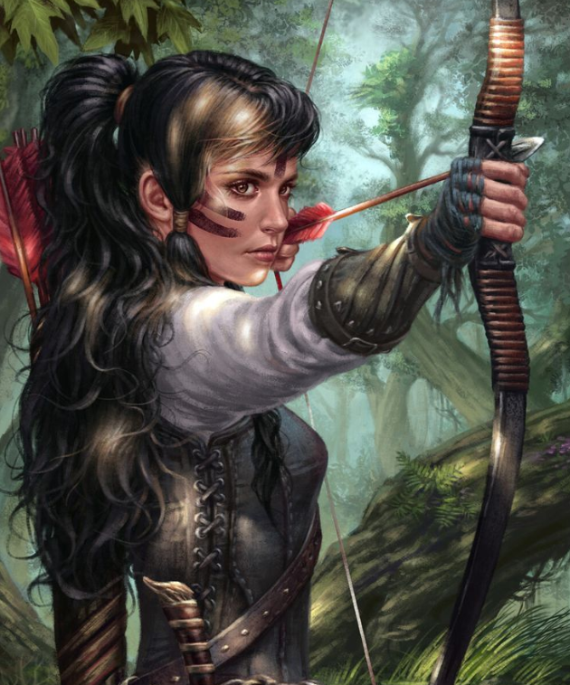

Nikoloz
Est un guerrier noble et courageux, vêtu d'une armure étincelante qui reflète la lumière du soleil.
Ses boucles d'or scintillent au soleil, tandis que ses yeux émeraudes reflètent la sagesse et la détermination.
Doté d'une grâce naturelle, il inspire la loyauté et l'admiration de tous ceux qui croisent son chemin. Sa prestance et son charisme en font un leader exceptionnel, prêt à défendre les opprimés et à restaurer l'honneur de son royaume.

Emma
Est une silhouette énigmatique, vêtue d'une armure d'un noir profond qui reflète la lumière de la lune.
Ses cheveux de jais tombent en cascade autour de son visage, ajoutant à son allure mystérieuse.
Poète dans l'âme, elle manie les mots avec autant d'habileté que son arc, créant des vers qui touchent le cœur. Musicienne aguerrie, ses mélodies résonnent dans les bois, captivant ceux qui l'écoutent. Elle incarne la force et la sensibilité, prête à défendre son royaume avec grâce et détermination.